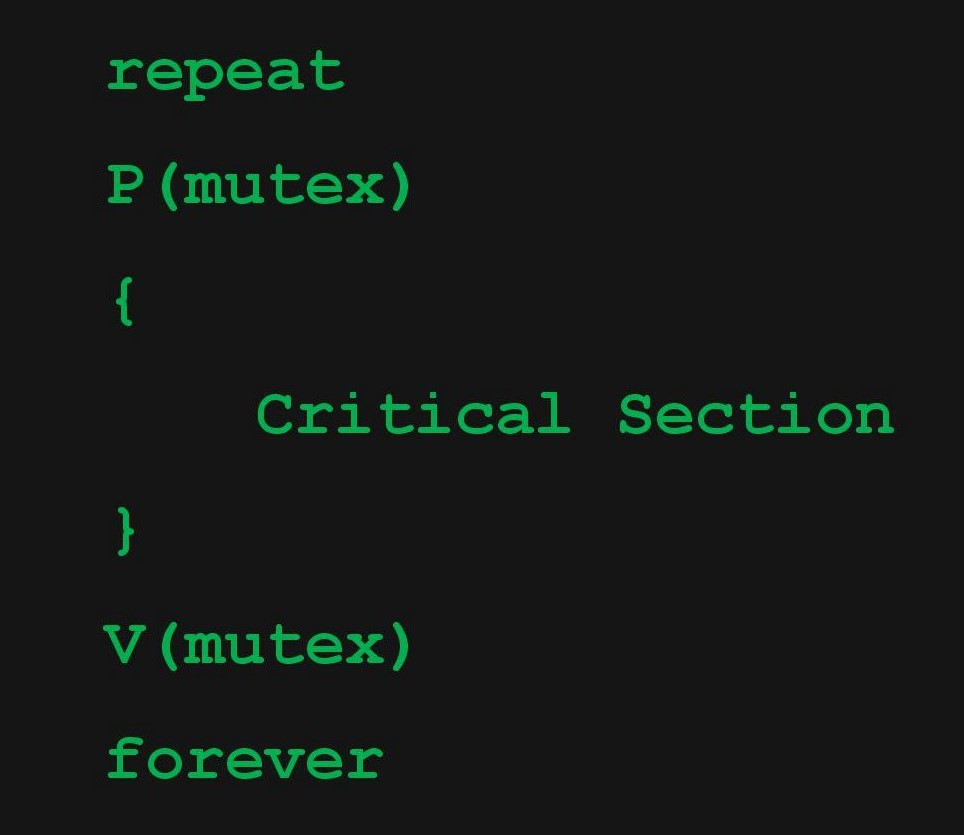

Each process Pi, i = 1, 2, …, 9 is coded as follows:

The code for P10 is identical except that it uses V(mutex) in place of P(mutex). What is the largest number of processes that can be inside the critical section at any moment?
(a) 1
(b) 2
(c) 3
(d) None of these
ANSWER:
Question 2
Let m[0]…m[4] be mutexes (binary semaphores) and P[0]…P[4] be processes. Suppose each process P[i] executes the following:
This could cause-
(a) Thrashing
(b) Deadlock
(c) Starvation but not deadlock
(d) None of the above
ANSWER:
Question 3
The following program consists of 3 concurrent processes and 3 binary semaphores. The semaphores are initialized as S0 = 1, S1 = 0 and S2 = 0.
How many times will process P0 print ‘0’?
(a) At least twice
(b) Exactly twice
(c) Exactly thrice
(d) Exactly once
ANSWER:
Question 4
Suppose we want to synchronize two concurrent processes P and Q using binary semaphores S and T. The code for the processes P and Q is shown below-
Process P
Process Q
Synchronization statements can be inserted only at points W, X, Y and Z. Which of the following will always lead to an output string with ‘001100110011’?
(a) P(S) at W, V(S) at X, P(T) at Y, V(T) at Z, S and T initially 1
(b) P(S) at W, V(T) at X, P(T) at Y, V(S) at Z, S initially 1 and T initially 0
(c) P(S) at W, V(T) at X, P(T) at Y, V(S) at Z, S and T initially 1
(d) P(S) at W, V(S) at X, P(T) at Y, V(T) at Z, S initially 1 and T initially 0
ANSWER:
Question 5
Suppose we want to synchronize two concurrent processes P and Q using binary semaphores S1 and S2. The code for the processes P and Q is shown below-